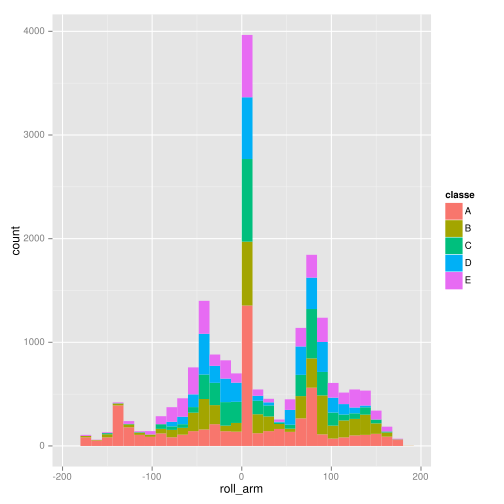
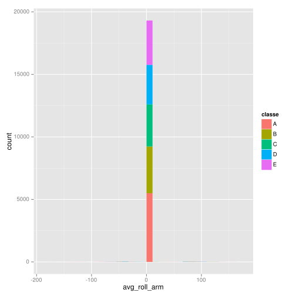

This is my submission for the Practical Machine Learning Course. I approached this project in the following fashion:
The PML training set consists of over a hundred of different variables. Using GGPlot, I could easily visualize the data to explore any obvious patterns and necessary preprocessing steps. These diagrams were generated with the following code: ggplot(allData, aes(x=attribute, fill=classe)) + geom_histogram(). One of the most relevant discoveries was related to the variation within the data. A large amount of attributes showed very little variance within their values. If this data is used for prediction, small outliers may significantly bias the predictor by inducing overfitting on that variable. An example is given in figure 1, below.
 Data preprocessing involved several steps. First, NA values were replaced with 0 by using the following command: sed 's/NA/o/g' ./pml-training.csv > ./pml-training-nona.csv. This yields a csv file without the NA, which were causing problems when loading.
In addition, before any training takes place, the columns containing metadata were filtered from the training and test sets. These columns included the ID, the username, the window columns, and the timestamps. The username was picked as metadata, as the person executing the training excercise seemed unlikely to affect the classe of the assignment. Additionally, the name of the person executing a training excercise has very little impact on any results when applying this model to a real life situation.
As mentioned in the exploratory data visualization section, a large array of variables can be shown not contain significant variation in their data. This results in data that is either useless for machine learning, since its presence does not indicate a certain class, or can even lead to overfitting. Using R's NearZeroVar function allowed me to filter these attributes, resulting in a leaner, more relevant dataset. As a pleasant side effect, having less attributes to train on yielded lower training times. The freqCut argument was set to 95/45, as it yielded the best filtered results upon visual inspection of the data variation.
The initial data visualization step revealed a number of attributes showed very similar patterns. With principal component analysis we can merge these attributes to a more compact, more bias resistant variable. This also yields a reduced amount of attributes, improving training speeds.
As our data is very much non-linear, I decided to select a number of algorithms suited for this specific data distribution. The following algorithms were selected:
-
-
library(caret) allData <- read.csv("pml-training-nona.csv",header=T) # Load training file variantData <- allData[,-c(nearZeroVar( allData, saveMetrics=F, freqCut = 95/45))] metaCols <- c(1,2,3,4,5,6) # Columns with metadata relevantData <- variantData[-metaCols] #relevantData <- allData #names( relevantData ) # These are all the remaining properties length(names(relevantData)) dp <- createDataPartition(y=relevantData$classe, p=0.66)[[1]] trainingData <- relevantData[dp,] testingData <- relevantData[-dp,] shuffledTesting <- testingData[sample(nrow(testingData)),] shuffledTraining <- trainingData[sample(nrow(trainingData)),] ctrl <- trainControl(preProcOptions = list(thresh = 0.8)) modelFit <- train( classe ~ ., data=shuffledTraining[1:1000,], method="rf", na.action = na.omit ) results <- predict(modelFit, newdata=shuffledTesting[1:1000,], na.action = na.omit) confusionMatrix(results, shuffledTesting[1:100,]$classe)
Created by Pretty R at inside-R.org